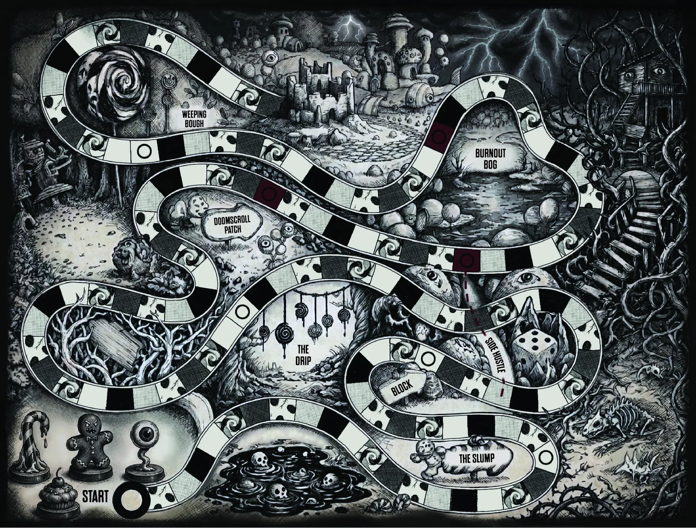
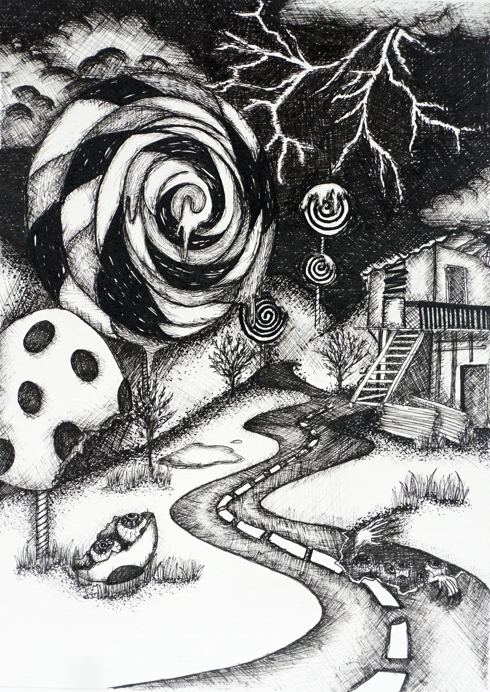
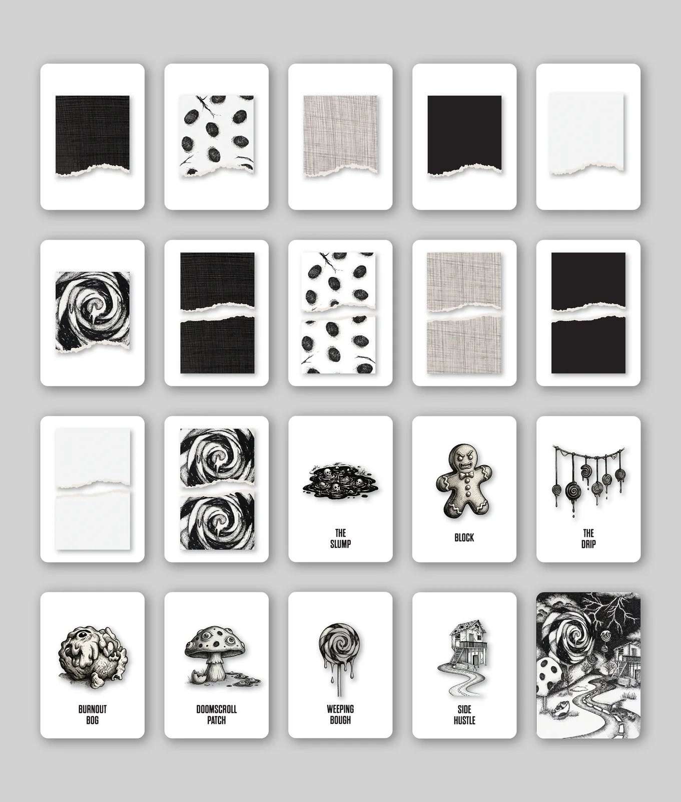
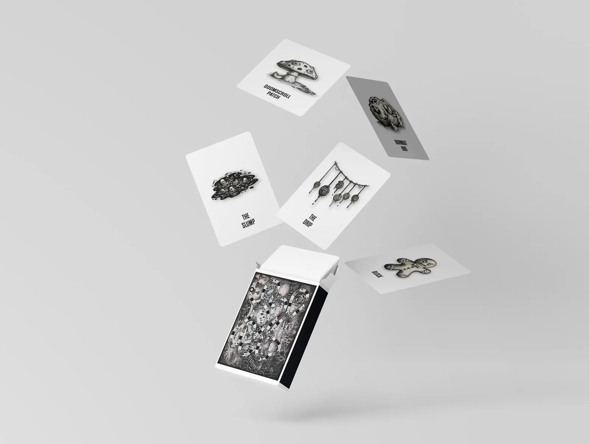
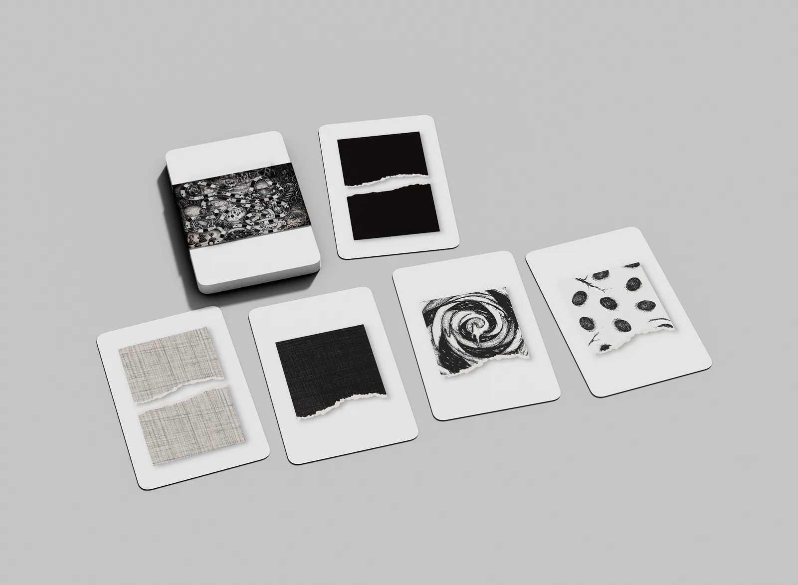

Fine Art
Candy Land redrawn in ink for a generation raised on collapsing certainties — a playable board where the thing waiting at the end is an empty wrapper.

Candy Land was my favourite childhood board game, and this is a version of it made after the fact. As we grow up the things we loved early get overwritten by what happens later, and the softer part of a person ends up sealed under something harder. I redrew the board in ink, using hatching to hold two registers at once: what is visible on the surface, and what has been buried beneath it.

The original has no player agency: you draw, you follow, you win or lose on luck. I kept that intact because it mirrors how we move through most things now — trends, feeds, peer pressure — without actually choosing any of it. The card structure stays identical to Candy Land. What changes is the board, which is deliberately chaotic, because the overwhelm is the point.

The landmarks along the path are the things that actually do the wearing now — recession, pandemic, climate anxiety, algorithmic surveillance — drawn as Weeping Bough, Doomscroll Patch, Burnout Bog, The Drip, Side Hustle, Block and The Slump. The goal at the end of the road is The Empty Wrapper, because the prescribed path of school, job, house, retirement no longer promises anything worth arriving at.

In hand
Printed as a deck and a folding board. At table size the hatching stops reading as texture and starts reading as weather.

Credits — Ink on paper, with the board and card deck produced digitally. After Candy Land (Eleanor Abbott, 1949). Drawing, game design and photography: Tanaya Agarwal.